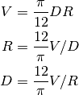
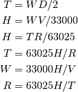

torque – Torque & Horsepower¶
See beltdriv – Belt Drives, chain – Chain Drives, gearing – Gears & Gearing, and shaft – Shafts and Shafting.
Analysis¶
This is a Solver for the relationships among several values:
| R: | R.P.M. |
|---|---|
| D: | Pitch dia.(gear/sprkt.) |
| T: | Torque (in.lb.) |
| H: | Horsepower |
| W: | Force in lb.(belt/chain tension) |
| V: | Velocity (feet/min.) |
There are two interrelated sets of calculations.
The Velocity-RPM-Diameter

The Torque-Force-Horsepower based on Velocity, RPM or Diameter.

Implementation¶
hamcalc.construction.torque
Solve The Velocity-RPM-Diameter problems, as well as Torque-Force-Horsepower based on Velocity, RPM or Diameter.
This is a single Solver for both sets of rules.
- hamcalc.construction.torque.torque(R=None, D=None, T=None, H=None, W=None, V=None)¶
Solve torque problems. This an instance of the Torque Solver.
Parameters: - R – R.P.M.
- D – Pitch dia.(gear/sprkt.)
- T – Torque (in.lb.)
- H – Horsepower
- W – Force in lb.(belt/chain tension)
- V – Velocity (feet/min.)
Returns: Dictionary with all values computed.
Test Cases:
>>> import hamcalc.construction.torque as torque
>>> t1 = torque.torque( R=1700, H=80, T=1431, D=54 )
>>> round(t1.W,3)
109.848
>>> round(t1.V,3)
24033.184
Not sure this is correct.
Quirks¶
As with other solvers, this iterates through the various rules. It iterates seven times, as if each rule might be used one time.
Rather than execute all seven rules, however, there are several GOTO’s to somehow optimize the rule execution.